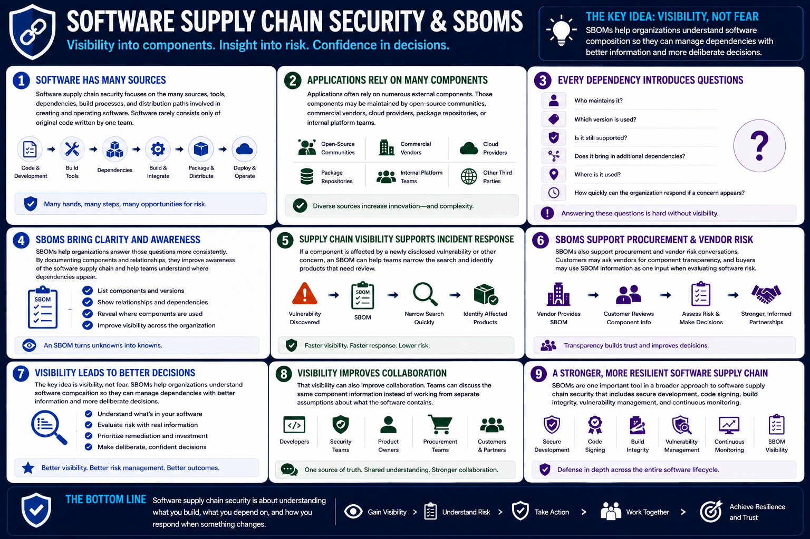

What Is SBOM?
Software Supply Chain Security
Connecting to LMS... Progress: in progress
Version 1.0 | Date: 2026-06-16 | Educational overview of Software Bill of Materials concepts.

Narration
Software supply chain security focuses on the many sources, tools, dependencies, build processes, and distribution paths involved in creating and operating software. Software rarely consists only of original code written by one team.
Applications often rely on numerous external components. Those components may be maintained by open-source communities, commercial vendors, cloud providers, package repositories, or internal platform teams.
Every dependency introduces questions. Who maintains it? Which version is used? Is it still supported? Does it bring in additional dependencies? Where is it used? How quickly can the organization respond if a concern appears?
SBOMs help organizations answer those questions more consistently. By documenting components and relationships, they improve awareness of the software supply chain and help teams understand where dependencies appear.
Supply chain visibility supports incident response. If a component is affected by a newly disclosed vulnerability or other concern, an SBOM can help teams narrow the search and identify products that need review.
SBOMs also support procurement and vendor risk conversations. Customers may ask vendors for component transparency, and buyers may use SBOM information as one input when evaluating software risk.
The key idea is visibility, not fear. SBOMs help organizations understand software composition so they can manage dependencies with better information and more deliberate decisions.
That visibility can also improve collaboration. Developers, security teams, product owners, procurement teams, and customers can discuss the same component information instead of working from separate assumptions about what the software contains.